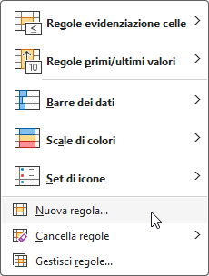

giorgioluciano.github.io
Code
CrystalNodes
ESGT
Categories
All
(24)
Dice
(1)
Essential
(5)
Fun
(4)
Monty Hall problem
(1)
Quarto
(1)
R
(17)
RSS
(1)
Simulation
(1)
Tutorial
(5)
Web Development
(1)
cards
(1)
fun
(4)
ggplot
(3)
packages
(2)
recipes
(2)
shiny
(1)
tutorials
(7)
visualization
(2)
Order By
Default
Title
Date - Oldest
Date - Newest
The Pitfall of Arbitrary Curve Deconvolution: A Cautionary Tale for Scientists and Students
Essential
Tutorial
As scientists and data analysts, we often encounter complex curves in our work. These could be spectroscopic data, chromatograms, or any other type of signal that appears as…
Oct 11, 2024
5 min
Configuring Your RSS Feed in Quarto: A Crucial Naming Tip
Quarto
RSS
Web Development
Creating an RSS feed for your Quarto blog can be tricky, but there’s one essential detail that can save you a lot of frustration: matching your file names correctly.
Oct 11, 2024
1 min
Criteri Essenziali per La Gestione Dati
Essential
Tutorial
È fondamentale comprendere la differenza tra un foglio di calcolo e un database, nonché l’importanza di una corretta gestione dei…
Sep 24, 2024
6 min
Non-Negotiables for Your Data
Essential
Tutorial
In today’s data-driven world, it is essential to understand the difference between a spreadsheet and a database, as well as…
Sep 24, 2024
3 min

Formattazione condizionale in Excel
Essential
Tutorial
La
formattazione condizionale
in Excel consente di applicare automaticamente stili di formattazione (come colori delle celle, stili di…
Sep 24, 2024
5 min
Confronto tra Excel e Database nella Gestione Clinica dei Dati: Errori E Sicurezza
Essential
Tutorial
Un errore comune in Excel è l’inserimento di valori non corretti a causa di formati non…
Sep 24, 2024
6 min
R Packages 2024 list so far
R
packages
tags
: #plot
[cran package link] https://CRAN.R-project.org/package=spiralize
Jun 19, 2024
6 min
A Mathematical Exploration of Pizza Sizes
Pizza, a…
Jun 12, 2024
1 min
Unraveling the DnD Dice Duel Riddle with Monte Carlo Simulation in R
R
Fun
Embark on a journey into the realm of Dungeons & Dragons as we unravel a captivating fiddle riddle involving a dice duel. Using the power of the R programming language and…
Jan 14, 2024
5 min
Exploring the Frequency of Number 0 in a Year of Roulette Spins: A Simulation in R
R
Fun
In this blog post, we’ll delve into the realm of casino roulette and use R simulations to estimate the frequency of the number 0 appearing over the span of a…
Jan 12, 2024
2 min
Exploring Coin Flip Sequences with Simulation in R
R
Simulation
In this blog post, we will dive into the…
Nov 15, 2023
2 min
The Illusion of Luck: How the Number Zero Always Wins in the Casino
R
fun
Have you ever wondered why casinos seem to have a mysterious…
Nov 12, 2023
3 min
Exploring Card Shuffling: A Visual Journey
R
fun
cards
Today, we embark on a visual exploration of card shuffling, delving into a captivating technique known as the Faro shuffle.…
Nov 12, 2023
2 min
Monty Hall simulation
R
fun
Monty Hall problem
The Monty Hall problem is a famous probability puzzle. In this scenario, a contestant on a game show is presented with three doors. Behind one door, there is a car, while…
Oct 12, 2023
1 min
Central Limit Theorem with Dice Rolls
R
fun
Dice
Dice rolling is a pastime enjoyed by many, whether in board games or games of chance. But have you ever wondered how the sum of multiple dice rolls behaves when you roll…
Oct 12, 2023
2 min
Namespaces in shiny: Why you need them
R
tutorials
ggplot
shiny
tutorials
In this example, both module_1 and…
Sep 16, 2023
2 min
Data Visualization
R
tutorials
ggplot
visualization
recipes
Exploratory Data Analysis (EDA) is the crucial first step in the data analysis process. Before applying complex statistical models or machine learning algorithms, it is…
Sep 16, 2023
18 min
The Birthday Paradox: When Probability Plays Tricks
R
Fun
The Birthday Paradox is a probabilistic problem concerning the…
Sep 16, 2023
1 min
Anscombe’s Quartet
R
Fun
Anscombe’s Quartet, known as the “Anscombe’s Test,” consists of four datasets with very…
Sep 16, 2023
5 min
R Packages 2022 list
R
packages
tags
: #ggplot #tidyverse #voronoi
[cran package link] https://CRAN.R-project.org/package=ggvoronoi
Mar 23, 2023
32 min
Snippet #4: boxplots and scatterplots: simple recipes
R
tutorials
ggplot
visualization
recipes
Example 1: We want to visualize the difference between two groups of patients that follow two different diets.
Group A
has an average of total cholesterol of
180
with a…
Mar 11, 2023
1 min
Snippet #3: Functions for simulating data
R
tutorials
First of all we use the
runif
and
rnorm
to have a look how they work.
Mar 4, 2023
1 min
Snippet #1: ggplot loops
R
tutorials
Instead of using boring plots we will use our private art collections and items.
Feb 19, 2023
1 min
Snippet #2: Cleaning column names of an imported csv
R
tutorials
First of all we import the csv using the library
(Müller 2020)
here
Feb 19, 2023
1 min
No matching items